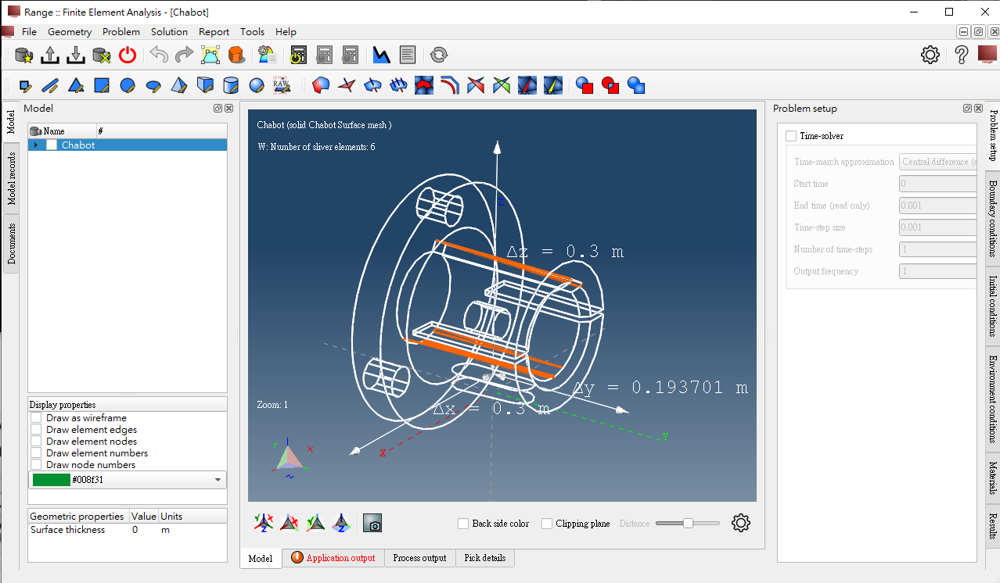

產品協同設計第二組
Home
Site Map
reveal
blog
簡介
組員名單與網站
Task-1
自定義隨身系統
Range_Software3
Fritzing
介紹影片
隨機分組介面成品
Combine1.1&1.2
成品
分組程式修正
ungit使用手冊
問題
Task-2
Vrep
Vrep-2
week7測試物件
week8測試物件
Onshape
Extra-add
Final-handball
期中報告
自定義隨身系統 <<
Previous
Next
>> Fritzing
Range_Software3
Github
-
老師網誌
是個結合了許多分析又可以繪圖的軟體，但對於操作完全不熟悉

自定義隨身系統 <<
Previous
Next
>> Fritzing